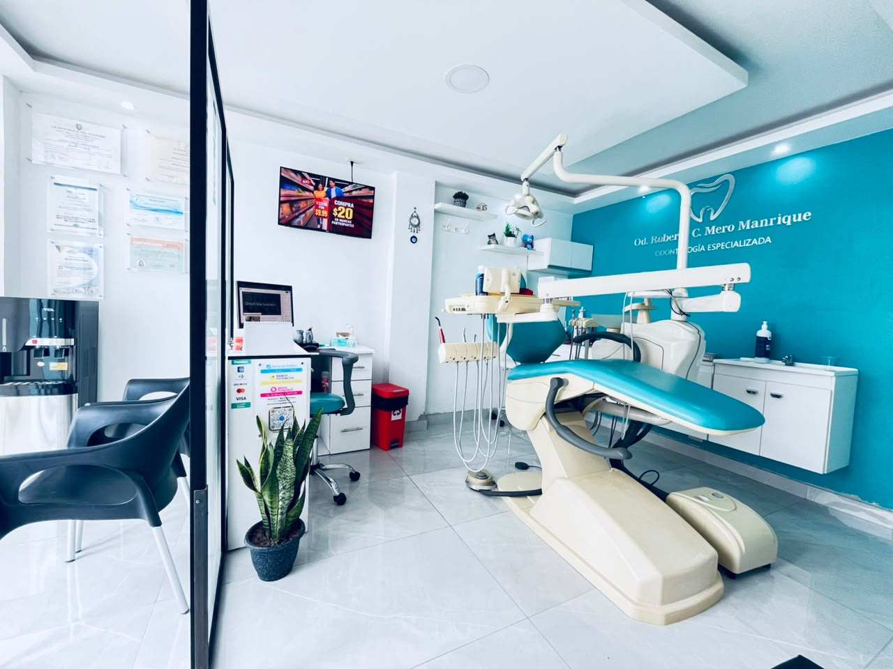
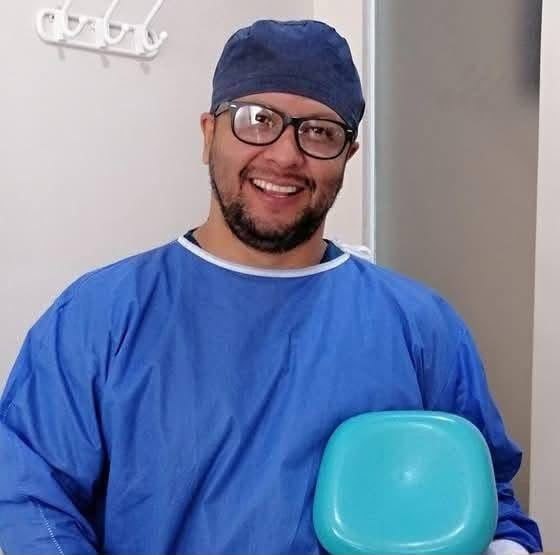
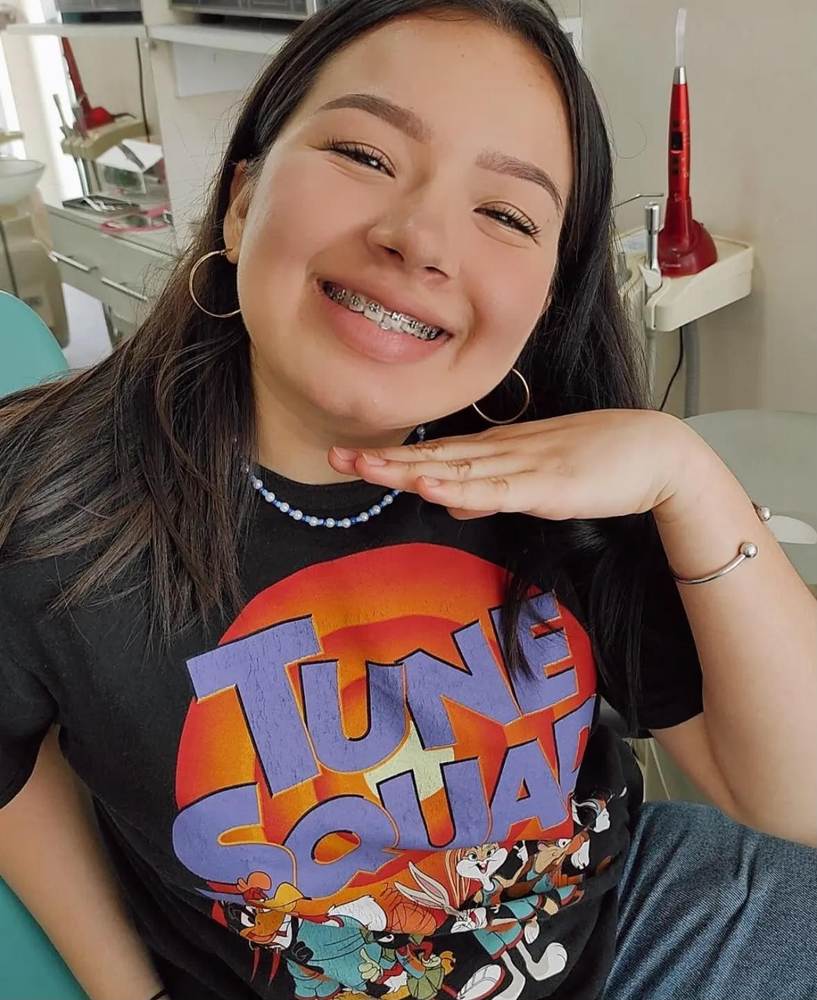
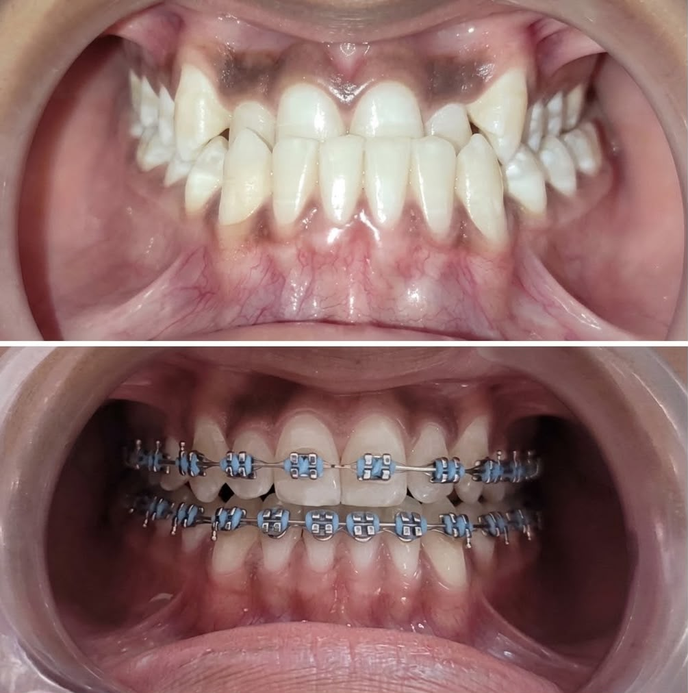
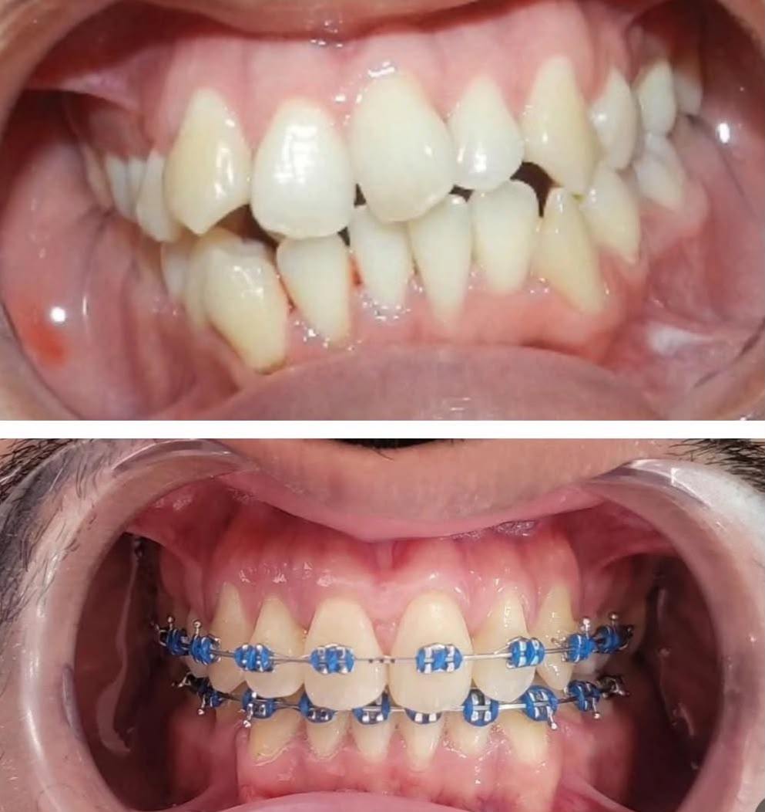
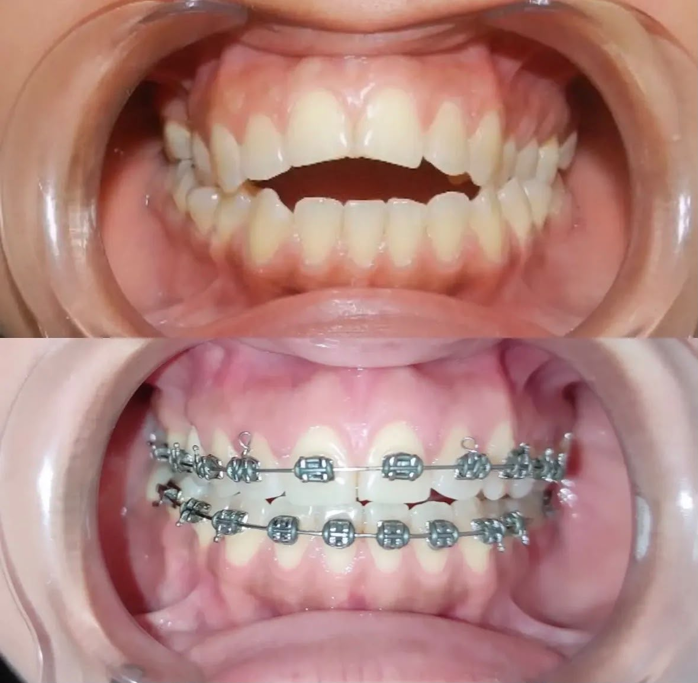

Ortodoncia
Tratamientos para alinear y mejorar la función de tu sonrisa.
NORTE DE GUAYAQUIL · ECUADOR
Atención odontológica cercana, profesional y pensada para cuidar tu sonrisa en cada etapa.
Agendar por WhatsApp

NUESTRO PROFESIONAL
Odontólogo con más de 15 años de experiencia
Premio Accésit al Contenta · UG 2005–2006
ATENCIÓN CERCANA
Cada paciente merece sentirse acompañado, cómodo y seguro durante cada etapa de su tratamiento.

TRATAMIENTOS
Opciones odontológicas para prevención, salud y estética dental.
Tratamientos para alinear y mejorar la función de tu sonrisa.
Soluciones estéticas y funcionales para restaurar tus dientes.
Recuperamos la forma y función de piezas dentales afectadas.
Diseños con resina que respetan la armonía de tu rostro.
Prevención y cuidado profesional para una sonrisa saludable.
Atención oportuna para proteger tu salud dental.
CASOS REALES
Resultados publicados siempre con autorización de cada paciente.



AGENDA TU CITA
Escríbenos por WhatsApp y con gusto te ayudaremos.